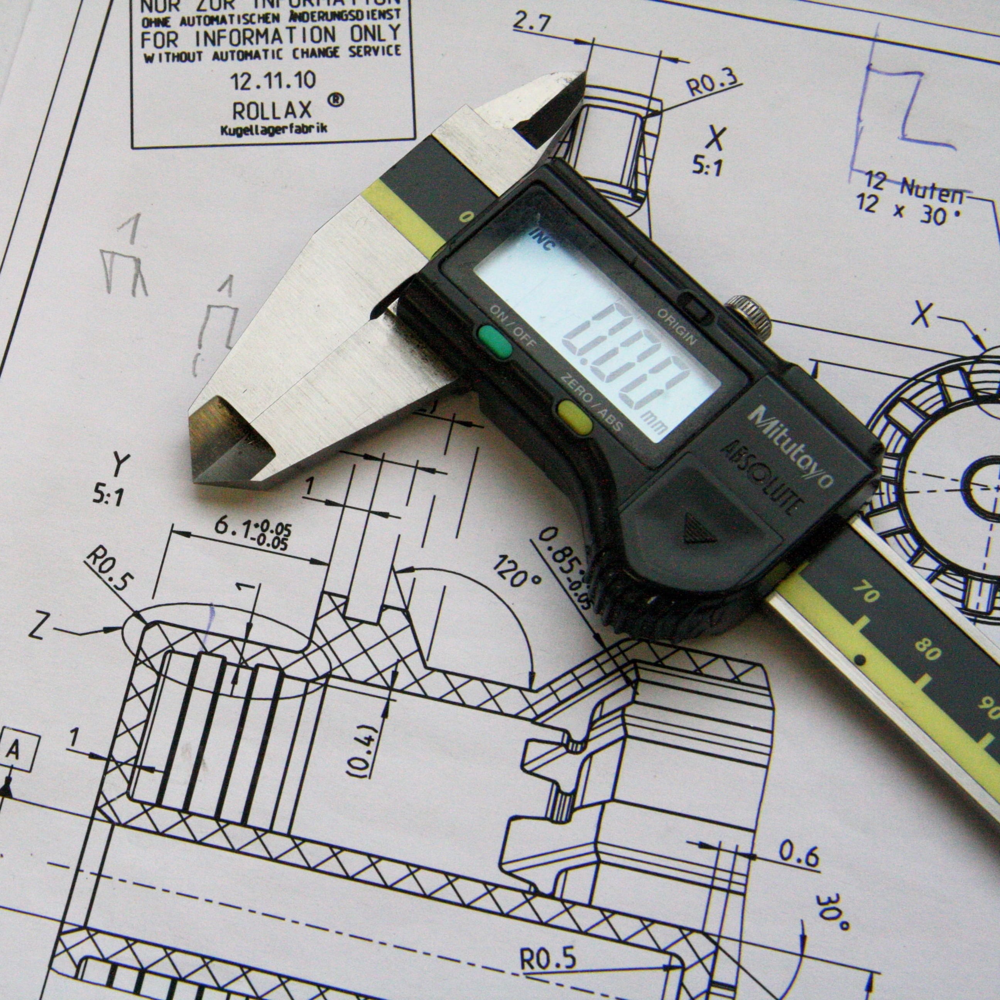

Below is some of the common engineering Majors that are offered here in Negros Occidental

Mechanical Engineering is a dynamic field of engineering that focuses on the design, analysis, manufacturing, and maintenance of mechanical systems. By applying principles of physics, materials science, and mathematics, mechanical engineers create and optimize a wide range of machinery and devices. They utilize computer-aided design tools to develop detailed plans, oversee the manufacturing process, and conduct rigorous testing to ensure performance, reliability, and safety. Mechanical engineers play a vital role in various industries, from automotive and aerospace to energy and manufacturing, contributing to technological advancements and the development of innovative solutions to complex challenges.
Electronics Engineering is a specialized branch of engineering that focuses on the design, development, testing, and maintenance of electronic circuits, systems, and devices. It combines principles from physics and mathematics with practical knowledge of electrical components to create innovative solutions for various industries. Electronics engineers work on a wide range of applications, including telecommunications, computer hardware, consumer electronics, medical devices, and automation systems. They are involved in designing circuit boards, integrating electronic components, programming microcontrollers, and ensuring the proper functioning and reliability of electronic systems. Electronics engineering plays a crucial role in advancing technology, enabling efficient communication, powering electronic devices, and driving innovation in the digital age.
Electrical Engineering is a diverse and essential branch of engineering that deals with the study, design, development, and maintenance of electrical systems and technologies. It encompasses the principles of physics and mathematics to understand and manipulate electricity, electronics, and electromagnetism. Electrical engineers work on a broad range of applications, including power generation and distribution, renewable energy, telecommunications, electronics, control systems, and signal processing. They design and analyze electrical circuits, develop and implement electrical systems, and ensure their safe and efficient operation. Electrical engineering is fundamental to modern society, powering our homes, industries, and technological advancements, and it plays a pivotal role in shaping the future of energy, communication, and automation.
Civil Engineering is a vital field of engineering that focuses on the design, construction, and maintenance of infrastructure and built environments. It involves the planning, analysis, and implementation of projects such as roads, bridges, buildings, dams, airports, and water supply systems. Civil engineers apply principles of mathematics, physics, and geotechnical studies to ensure the safety, functionality, and sustainability of structures and infrastructure projects. They collaborate with architects, urban planners, and construction teams to transform conceptual designs into practical realities, considering factors such as materials, structural integrity, environmental impact, and public safety. Civil engineering plays a crucial role in shaping the physical infrastructure that supports society, improving connectivity, enhancing quality of life, and promoting economic development.
Marine Engineering is a specialized branch of engineering that focuses on the design, construction, operation, and maintenance of various marine vessels and structures. It encompasses the application of engineering principles, mechanics, and naval architecture to ensure the safe and efficient performance of ships, submarines, offshore platforms, and other marine equipment. Marine engineers work on a wide range of systems, including propulsion systems, power generation, navigation, communication, and safety systems. They are responsible for ensuring compliance with regulatory standards, optimizing fuel efficiency, managing onboard systems, and addressing technical issues that arise during a vessel's lifecycle. Marine engineering plays a crucial role in enabling maritime transportation, offshore exploration, and the development of sustainable marine technologies, contributing to the global economy and the exploration of the world's oceans.